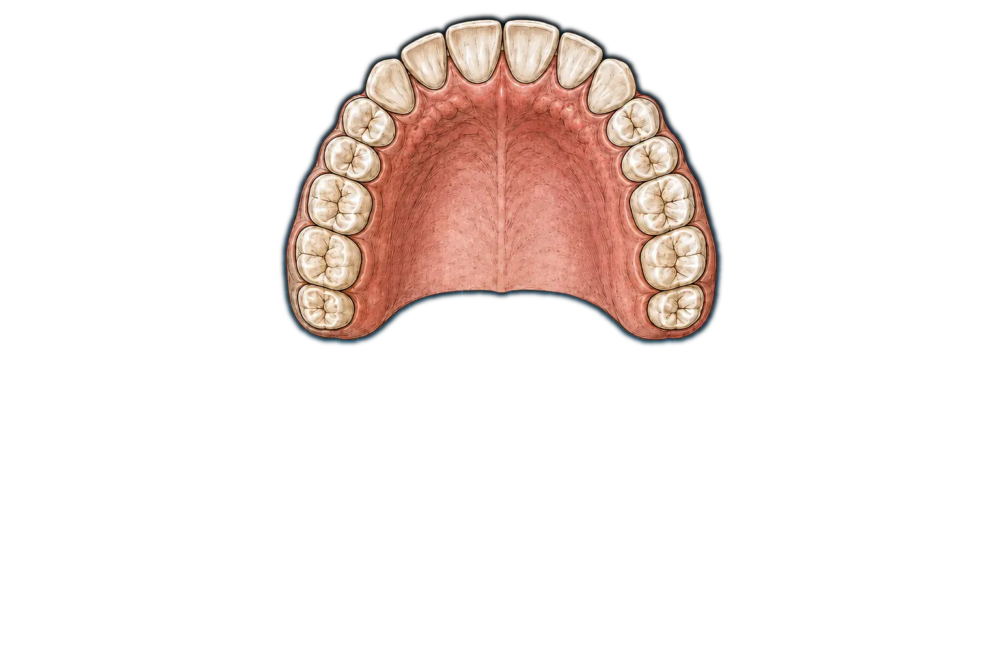
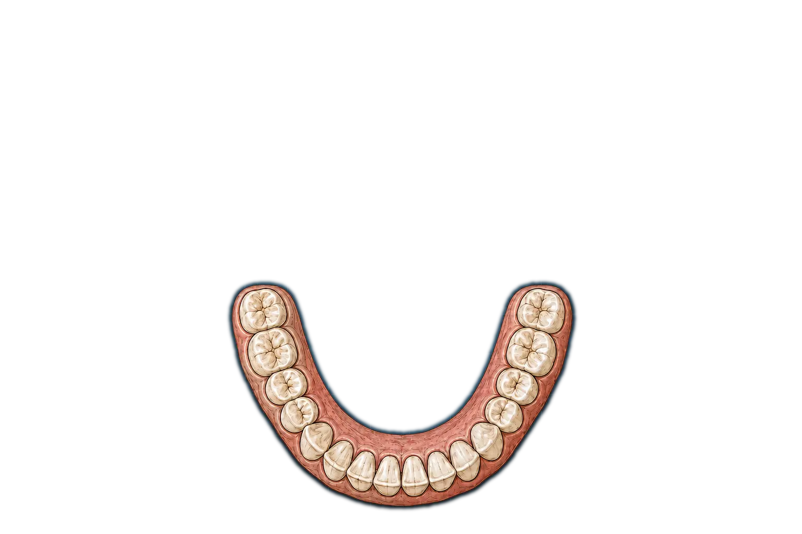

Dentaphone
DENTAPHONE · 32 TEETH · AUDIO OFFChoose the 2D anatomy or 3D chomper tab. The 2D anatomy stays fixed for playing individual teeth and brushing notes. In 3D, drag empty space to rotate the mouth; jaw opening, Chomp, and food controls are available only in this view. Automatic brush circles both arches; Manual brush lets you drag the bristles over individual teeth, and Park brush stops either mode. Use Tab to enter either dental arch. Left and Right move through an arch; Up and Down move between matching upper and lower teeth; Home and End move to the rear teeth. Press Enter or Space to strike. Drag across teeth for a glissando. A, S, D, F, G, H, J, and K play the first eight lower-arch teeth in the current pitch map.
Selected lower right third molar, tooth 32, C3, Wood Bar.